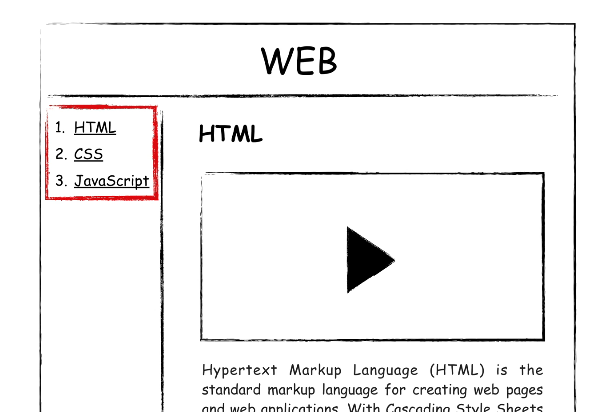

강의는 생각보다 재미있는 일이었습니다.
생각해보면
제 안에서 잠자고 있던
선생님의 기질에 눈을 뜨게 된 계기가
그때부터가 아니었을까 싶어요.
누구나 사람들 앞에서 1시간 이상 말할 기회가 있다면 1시간 뒤에는 떨지 않습니다.
과거에는 상상도 할 수 없는 일이었고,지금을 중심으로 전후 20년은
아날로그가 디지털로
오프라인이 온라인으로 전환되는
대변화의 순간이라고 생각합니다.
그 한가운데에 우리가 서 있습니다.
무엇인가를 만들기 전에 무엇을 만들 것인가를 미리 상상하고, 계획해보는 과정이 필요합니다. - 기획
사람이 하는 일
다시 말해서
원인을 부르는 여러 표현이 있습니다.
부호 또는 신호라는 의미의 코드 (code),
원천이라는 뜻의 소스 (Source),
약속이라는 의미에서 언어
그 중에서 컴퓨터 언어라고 합니다.
기계가 하는 일
다시 말해서 결과를 부르는 여러 표현이 있습니다.
애플리케이션
(줄여서) 앱,
응용 프로그램,
프로그램
웹에서는 결과를 웹 페이지,
웹페이지가 모여있으면 웹사이트라고 합니다.
기능이 좀 많으면 웹애플리케이션이라고 합니다.
줄여서 웹앱이라고도 하죠.
즉, 원인인 코드를 통해서 결과를 만든다는 것이 코딩을 이해하는 핵심입니다.
HTML은
쉬우면서, - 앞으로 여러분이 배울 어떤 컴퓨터 언어도 HTML 보다 훨씬 어려울 것이라고 장담합니다.
이 언어의 문법을 완전히 다 배우는데 10분도 걸리지 않습니다.
중요합니다. - 하루에 100번 이상 하는 일이 있다면 그 일은 중요한 일일까요? 아닐까요?
웹을 좋아하는 또 하나의 이유
- 퍼블릭 도메인(Public Domain)~ 저작권이 없는 것들을
- 웹을 만든 팀 버너스 리는 웹을 어떠한 저작권도 존재하지 않는 완전한 자유를 의미하는 퍼블릭 도메인으로 선언했습니다.
웹은 특정 기업이 독점하는 기술만큼 빨리 발전하지는 못했지만,
웹은 특정 기업이 독점하지 않기 때문에
1990년 이후로 27년이 지난 지금 2017년까지 살아남았고,27년 뒤에도 살아남을 가능성이 매우 높습니다.
위의 그림에서 strong이라는 것을 HTML에서는 문법적으로 태그라고 부릅니다. 앞에 있는 태그를 열리는 태그 뒤에 있는 태그를 닫히는 태그라고 구분해서 부르기도 합니다. 닫히는 태그는 태그명 앞에 /를 붙입니다.
정보기술은 역사가 길지 않습니다.
좋게 말하면 최신이고,
안 좋게 말하면 근본이 약합니다.
부족한 근본을 어디서 빌려왔을까요?
많은 것이 일상에 대한 비유와 은유입니다.
그런 점에서 컴퓨터는 하나의 거대한 시입니다.
컴퓨터가 차갑게 느껴질 수 있지만,
컴퓨터 공학은 사실
낭만적인 것으로 가득 차 있습니다.
중요한것은 어렵고 쉬운것은 사소하다
이렇게 생각하게 된 이유가
무엇인지
가만히 생각해 보니까
쉬운 것은
시험에 나오지 않기 때문이었던 것 같습니다.
시험의 목적은
누가
얼마나 열심히 공부했는지를 구분하는 것이기 때문에
틀릴 만한 것이 출제됩니다.
이런 상태가 오래 지속되면 어려운 것이 중요하고, 쉬운 것은 중요하지 않다는 생각을 하게 되는 것 같습니다.
코딩을 하면서 느낀 것 중에 가장 귀한 것은 꼭 그런 것은 아니라는 것을 알게 된 것입니다.
처음에 배우는 것은 쉽지만 중요합니다. 가장 자주 사용되는 부품이면서, 그 부품을 결합해서 새로운 완제품을 만들어 내는 결합방법이기 때문입니다.저는 웹을 공부하고 계신 여러분에게 감히 이렇게 말씀드리고 싶습니다. 여러분의 인생은 태그를 배우기 전과 배우고 난 후로 나눌 수 있습니다.
W3C(The World Wide Web Consortium)라는
국제민간표준화기구의 홈페이지입니다.
웹은 한 기업에 의해서 만들어지는 것이 아니고
W3C에 소속된 여러 기업과 기관들의
논의를 통해서 만들어지고 있습니다.
미래에는 어떤 기능이 필요하고,
그 기능은 어떤 태그로 표현할 것인가를 의논하는 것이죠.
W3C에서 웹의 미래가 결정되면
각각의 브라우저 업체들이 같은 태그를
보다 잘 구현하기 위해서 치열하게 경쟁하고 있습니다.
웹이 다른 기술들과 구분되는
공공재적인 면모라고 할 수 있습니다.
처음부터 정의를 보는 것 보다는 예제를 먼저 보시는 것도 좋습니다. 예제를 통해서 이 기능이 무엇인가에 대한 느낌을 가지고 정의를 보시면 훨씬 더 잘 이해가 될거에요. 경험을 통해서 추론하는 것은 자기 힘으로 알아내는 것이고, 이론을 통해서 배우는 것은 남의 도움을 받는 것입니다. 둘 다 중요하지만 경험으로부터 출발하는 것을 저는 더 좋아합니다.
무엇인가를 알아내는데 수단과 방법을 가리지 마세요. ^^ 우아한 방법은 교실 안에서만 존재합니다. 자연의 비밀은 우아한 방법으로는 찾을 수 없습니다. 세상은 점점 무엇을 모르는지만 알고 있다면 이미 아는 것이나 다른 없는 상태로 나아가고 있습니다. 과거에 기초란 더 어려운 것을 알기 위한 과정으로서 중요했습니다. 그래서 자기 분야가 아니면 알려고 하지 않았습니다. 오늘날은 기초만으로도 많은 것을 할 수 있는 시대가 되고 있습니다. 기초만 알아도 모르는 것은 기계가 알려주고, 못하는 것은 기계가 해 주거든요.공부하실 때
통계를 기반으로 공부 방향을 스스로 설정하셨으면 좋겠습니다.
또
가야 할 길 보다,
거쳐온 길을 보면서
자기에게 유리하게 상황을 해석하셨으면 좋겠습니다.
자기만큼은 자기의 편이 되어야죠
HTML의 여러 태그 중에 무엇인가를 설명하지 않는 태그들은 감싸야하는 컨텐츠가 없기 때문에 태그를 닫지 않는다는 규칙이 있습니다. img, input, br, hr, meta 등이 닫지 않는 태그의 사례입니다.
HTML에서 새로운 줄을 표현할 때는단락을 표현할 때는 줄바꿈 태그 보다는 단락을 표현하는 태그인 p 태그가 더 좋은 선택입니다.
p 태그를 통해서 단락의 경계를 분명히 하면서 CSS를 통해서 p 태그의 디자인을 자유롭게 변경할 수 있기 때문에 br 태그 보다 p 태그가 더 좋은 선택입니다.누구나 기초가 중요하다고 말합니다.
하지만 기초가 중요하다는 말을 잘 들어보면
응용으로 가는 과정으로서
기초가 중요하다는 뜻인 경우도 많더라구요.
그런데 사실 기초는
기초만으로도 할 수 있는 일이 많습니다.
우리는 '웹사이트 만들기'라는
큰 목표를 향해서 나아가고 있지만,
지금까지 배운 것으로도
할 수 있는 일이 많습니다.
공부를 하면
보이지 않던 것이 보이기 시작합니다.
들리지 않던 것이 들리기 시작합니다.
오늘날 정보의 세계에서
검색엔진의 검색결과에서 노출되느냐는
실제로 존재하는냐,
존재하지 않는냐의 문제라고
할 수 있습니다.
100페이지 밖에 있는 검색결과를 누가 보겠어요.
한편,
HTML이 중요한 또 하나의 이유가 있습니다.
웹의 핵심적인 철학은 접근성입니다.
웹은 모든 운영체제에서 동작하고,
웹페이지의 소스코드는 누구나 볼 수 있고,
웹은 저작권이 없는 순수한 공공재입니다.
웹의 이런 특징들이
웹을 다른 기술들과 구별되는
특별한 것으로 만든다고 생각합니다.
특히 웹이 중요하게 생각하는 접근성은
신체적인 장애가 있는 사람도
웹을 통해서 정보에 접근할 수 있어야 한다는 것입니다.
예를 들어서
시각장애가 있는 사람은
스크린리더(screen reader)와 같은 프로그램을 이용해서
정보를 청각화해서 접하게 됩니다.
그런데
웹페이지를 예쁘게 하기 위해서
HTML을 사용하지 않고
웹페이지 전체를 이미지로 만든다면
시각 장애가 있는 분들에게는
암흑과도 같은 상태가 됩니다.
자신도 모르는 사이에 누군가를 소외시키고 있는 것입니다.
반대로,
HTML을 의미론적으로 잘 사용한다면
자신도 모르는 사이에 누군가에게 정말 큰 도움을 주고 있는 것입니다.
이렇게
HTML은
비즈니스적인 측면에서도 중요하지만,
휴머니즘적인 측면에서도 중요한 기술입니다.
이번 시간에는
태그의 심화된 문법인
속성(attribute)을 배우게 될 것입니다.
이것까지 배우면
HTML의 기본 문법을
완전히 마스터한 것이 됩니다.
한편
아주 인기있는 태그인
img 태그도 살펴보겠습니다.
속성은
태그의 이름만으로는 정보가 부족할 때 사용됩니다.
속성이라는 문법이 추가되면서
이제 태그는 보다 풍부한 표현력을 갖게 되었습니다.
이번 시간에는
태그 간의 관계를 나타내는 표현인
부모(parent),자식(child)에 대해서
알아보겠습니다.
몇몇 태그들은 부모 자식 관계처럼 고정된 관계인 태그들이 있습니다.
기획서 상에서 아직 진행하지 않은 부분이 붉은색으로 표시한 목차 부분입니다. 이 부분을 완성할 거에요.
목차를 표현할 때 쓰라고 태그를 마련해 두었습니다. - li 태그코딩 공부를 할 때는 항상
극단적으로 생각해야 합니다.
극단적이지 않은 경우에는
코딩을 할 필요가 없기 때문입니다.
만약 수업의 목록이
3개가 아니라
1억개라고 생각해 보세요.
1억개의 항목을 간신히 완성했습니다.
그런데 누군가가
저 중에 첫번째 항목을 지워달라고 하면
여러분 어떻게 해야 하나요?
나머지 항목의 번호를 모두 수정해야 할 것입니다.
이런 상황에 있는 사람은 얼마나 절망스러울까요?
ul 태그가 ol 태그로 변경되었습니다. ul은 unordered list의 약자이고, ol은 ordered list의 약자랍니다.
정보가 많아짐에 따라서 정보를 잘 정리정돈하기 위한 체계, 다시 말해서 구조라는 것이 필요합니다. 이번 시간에는 그 구조 만드는 법을 살펴볼 것입니다.
제목을 지정하기 위해서는
title이라는 태그를 사용
특히 title 태그는
검색엔진이 웹페이지를 분석할 때
가장 중요하게 생각하는 태그이기 때문에
title 태그를 쓰지 않으면 정말 큰 손해랍니다.
우리 수업에는 두개의 혁명적 순간이 있습니다.
하나는 태그라는 문법을 배운 순간이고,
또 하나는
지금부터 설명할 태그를 알게 된 순간입니다.
태그가 웹의 왕국이라면 지금부터 설명드릴 태그는 이 왕국의 제왕입니다.
a는 anchor의 약자이고, href는 HyperText Reference의 약자입니다.
target="_blank"는
링크를 클릭했을 때
새창에서 페이지가 열리게 하는 속성입니다.
또 title은
이 링크가 어떤 내용을 담고 있는지를
툴팁으로 보여주는 기능입니다.
링크를 통해서 서로 결합되어 있는 웹페이지들의 그룹을 웹에서는 책이라고 하지 않고 웹사이트(web site)라고 합니다.
인터넷과 웹은 같을까요? 다를까요?
벤 다이어그램으로 살펴본다면 웹이 인터넷의 부분집합입니다. 또 웹과 동급인 기술이 별처럼 많이 있습니다.

이 관계를 역사적으로 살펴보면
정보기술 역사상 중요한 사건 2개가
1960년대와 1990년대에 있었습니다.
1960년은 인터넷이 탄생합니다.
1990년에는 웹이 시작됩니다.
두 기술은
무려 30년의 시차를 가지고
세상에 태어났습니다.
우리가 이 두 기술을 잘 구분하지 못하는 것은
웹이 너무나 성공했기 때문입니다.
또 웹 때문에 사람들이 인터넷을 쓰기 시작했기 때문입니다.
그만큼 웹은 중요한 기술입니다.
1990년 11월에 세계 최초의 웹브라우저를 만듭니다. 이 웹브라우저의 이름이 바로 월드 와이드 웹(world wide web)이었습니다. 훗날 이 브라우저의 이름이 웹의 이름이 되죠.
1990년 12월 24일 크리스마스 이브에
마침내 웹서버를 완성합니다.
이 서버에 info.cern.ch라는
도메인 네임을 부여합니다.
우리가 배운 것은
2017년을 중심으로
지난 27년 동안 중요했고,
앞으로 27년 후에도 중요할 본질입니다.
어렵지 않고,
바뀌지 않습니다.
컴퓨터를 만든 사람 중의 한명인
폰노이만은 수학 천재였습니다.
그에게 수학을 잘 하는 법을 물었습니다.
폰노이만은 이렇게 대답했다고 합니다.
수학은
이해하는 것이 아니라
익숙해지는 것입니다.
저는 공부의 목적은
익숙해지는 것이라고 생각합니다.
이해는 익숙해지기 위한 방법 중의 하나일 뿐입니다.
자꾸 생각하고, 이야기하고, 사용하다 보면
익숙해지게 됩니다.